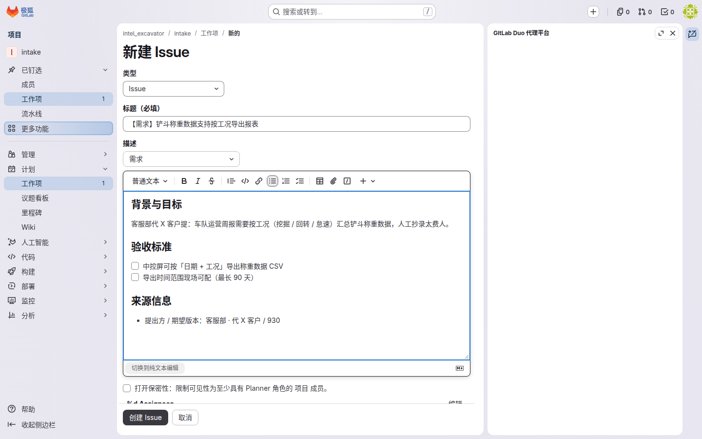
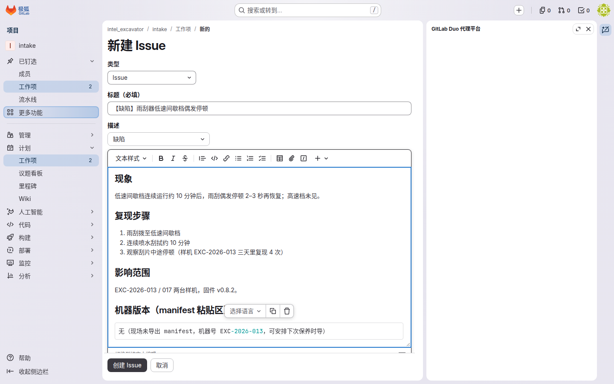
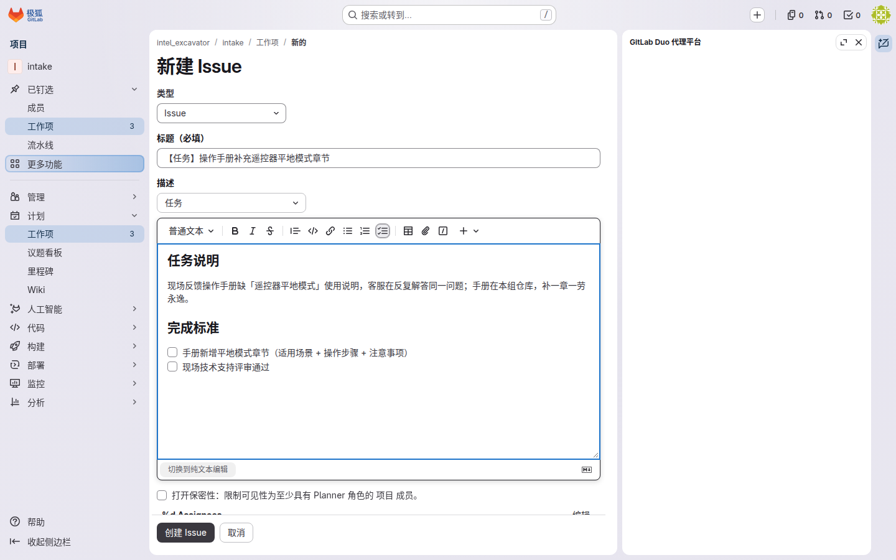
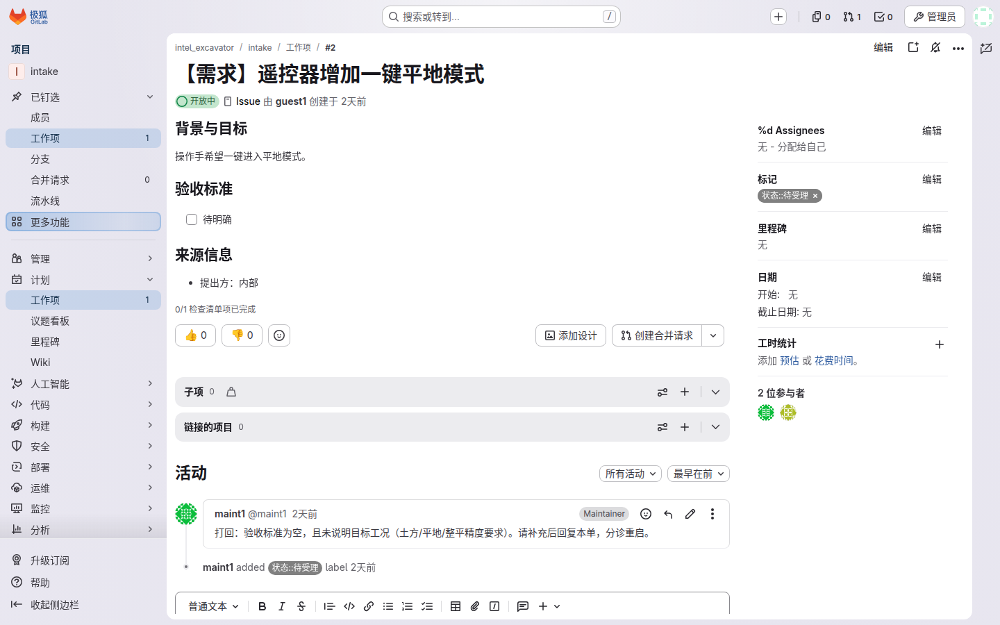
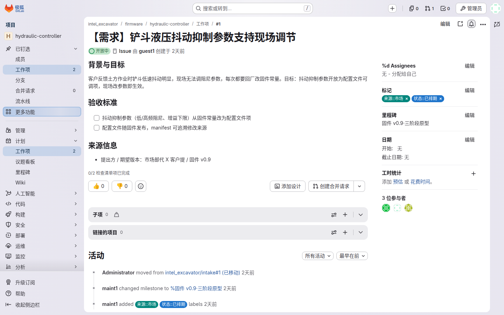
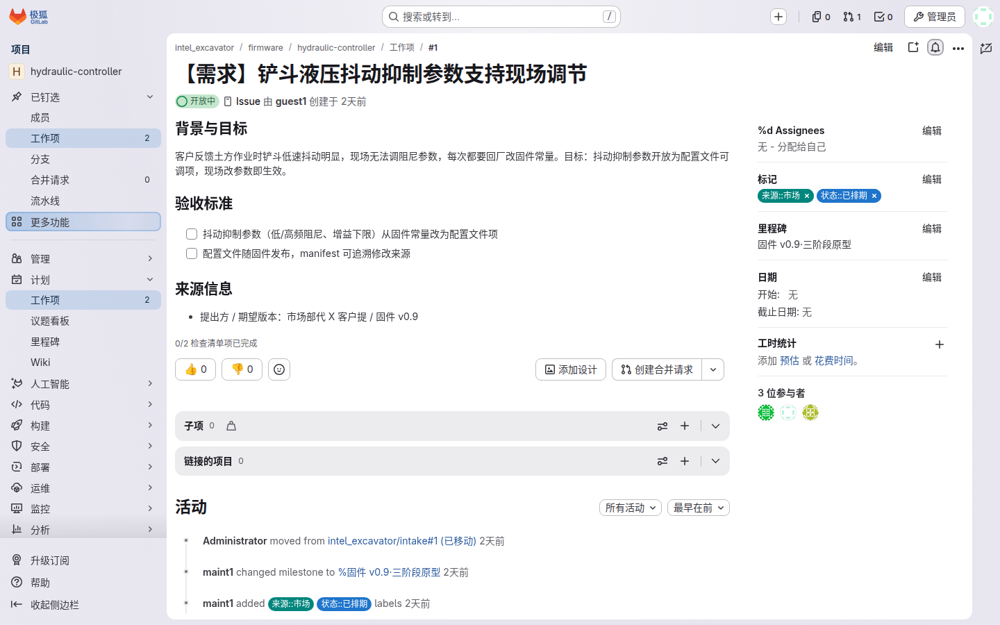
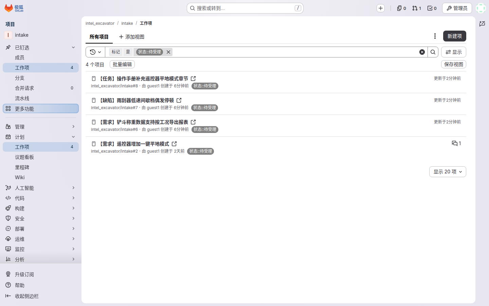

你是谁
这篇教程服务两类人，共用一个入口：
需求提出人——市场、客服、集团接口人、现场反馈汇集者。你要的是一个开通进 intel_excavator 组的账号：最低 Guest 角色即可提单——无任何代码权限，也不需要知道代码住在哪个仓库。提单不设角色门槛：组内开发成员照样自己提单、互相提单，都从受理台走。
管理者——带团队看进度的人。你是 Reporter：不写代码，周例会打开组看板和里程碑页投屏，回答"需求到哪了、卡在哪"。
你能做什么 / 不能做什么
| 能 ✅ | 不能 ❌ |
|---|
| 在受理台按模板建单（需求 / 缺陷 / 任务） | 改任何代码仓库（无权限，也不需要） |
| 给自己的单补评论、补信息 | 打标签、改看板配置（标签由分诊代打，配置平台组管） |
| 看组看板、里程碑完成度（例会投屏） | 在群里口头提需求代替提单（制度：一概"请提单"） |
典型任务流 A：提一张单（需求提出人）
1进受理台，选模板
左侧 群组 → intel_excavator → intake（受理台）仓库 → 议题 → 新建议题。三个模板三选一：需求（背景 / 目标 / 验收标准）、缺陷（现象 / 复现 / 影响范围 / 机器 manifest 粘贴区）、任务（技术改进类）。填好即如下三张的样子：

需求模板 ｜ 背景 / 验收标准（必填）/ 来源信息——验收标准写"怎么算做完"

缺陷模板 ｜ 现象 / 复现步骤 / 影响范围 / manifest 粘贴区——现场没有 manifest 就写"无"

任务模板 ｜ 任务说明 / 完成标准——技术改进类走这张
🔍 为什么所有需求只进一个口？
来源再多（集团 / 市场 / 客户 / 现场 / 内部）都走同一张模板进来，分诊人才能在 3 个工作日内给你答复；散在群消息里的需求没人接、也没人记得住。
2填完三段，提交拿单号
模板三段里验收标准必填，写"怎么算做完"——最好是可检查的样子（如"怠速下驾驶室振动位移 ≤ X mm"）。提交后拿到 #单号，这是你后续追问进度的唯一凭证。

受理台列表 ｜ @guest1 的需求单已进「待受理」队列——所有来源唯一进料口
🔍 为什么验收标准空泛会被打回？
单据质量靠两道兜底：模板示例给"好单"的样子 + 分诊打回机制。"优化一下体验"这种单没人知道做完没做完。
3等分诊：看单去哪了
3 个工作日内，分诊人（域 Owner 兼任）会做三件事之一：移交（单搬到对应产品域仓库、进排期）、打回（信息不足，退回你补）、婉拒（重复或超范围，说明理由关闭）。「来源::」「状态::」两类标签由分诊人代打——Guest 无打标权限。

分诊移交后 ｜ 单已 move 到 firmware 域仓库、状态 已排期、进里程碑（此单随后随 MR 合入关闭，见第 4 步）
4怎么知道做完了：不用催
开发在 MR 描述里写 Closes #单号，代码评审合入的那一刻，你的单自动关闭、自动记录合入 commit——哪个版本收了你这单，点开单就能看到。

合入自动关单 ｜ MR !5 合入那一刻单自动关闭——合入 commit 自动记录在单上
🔍 为什么不用发消息催进度？
追溯链由系统自动生成，不靠人事后补录：单的状态就是进度，催问的答案都在单上。需要外部验收的单（台架 / 现场确认）合入后进"待验证"，验收人通过后手关。
典型任务流 B：例会看板三屏（管理者）
1组看板：一屏看全域状态
群组 → intel_excavator → 议题 → 板块（Board）。列就是状态（待受理 → 已排期 → 开发中 → 待验证 → 已关闭 …），卡片在哪一列，活在哪一步。
 组看板 ｜ 列=状态——待受理/已排期/开发中/待验证/已关闭/已拒绝，一屏看全域
组看板 ｜ 列=状态——待受理/已排期/开发中/待验证/已关闭/已拒绝，一屏看全域
2里程碑过滤与完成度
看板按里程碑过滤（里程碑 = 版本节点，如"930"），或直接打开里程碑页：完成度按单数给百分比 + 已关/未关清单——例会投这一屏。
 里程碑 930 完成度 ｜ 按单数给百分比 + 已关/未关清单——图示 42%（3/7 已收）
里程碑 930 完成度 ｜ 按单数给百分比 + 已关/未关清单——图示 42%（3/7 已收）
🔍 例会只看板、不念稿
"待验证挂了一周的单"自动成为议程。不做工时、不做燃尽——版本制交付，看单数就够了。
3受理台积压：分诊堵没堵
进 intake 仓库，议题按 待受理 过滤——待受理堆着多少单，分诊有没有堵，一眼可见。积压超一周，例会点名。

受理台积压 ｜ 按 待受理 过滤——图示 4 单在队，分诊堵没堵一眼可见
🔍 为什么管理者要盯受理台？
提单人的意愿是这条流程的命脉，而意愿取决于响应速度——积压视图就是分诊健康的仪表盘。
常见报错自救
💡 我的单被打回了
不是拒绝：分诊人在评论里说明了缺什么，把信息补在评论区即可，单会重新进入分诊。
💡 我的单被婉拒了
看关闭理由：重复（原单链接就在理由里）、超范围（找对口团队）。不认可可找域 Owner 申诉。
💡 找不到提单入口
群组 → intel_excavator → intake，或直接收藏受理台地址。所有来源都从这里进，别把需求发给个人。
💡 想知道"我之前提的那单做到哪了"
打开单看状态列位置；已关闭的单里挂着合入 commit 与所属里程碑，哪次发布收的一查便知。
红线清单
🚫 群里 / 口头提需求不算数
体系只认板上的单——群消息一概回"请提单"。口头文化是这条流程唯一的对手。
🚫 单里不贴客户商务 / 合同细节
需求说清楚就行，商务条款不进工单系统——DLP 意识延伸到需求侧。
🚫 管理者不绕过分诊直接派活
排期是域 Owner 把单拖进里程碑，不是领导打招呼——绕过受理台的活没有追溯链。